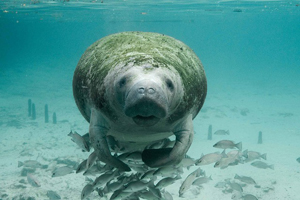

Manatee
Mariners before the mid 19th century referred to manatees as mermaids.
- Scientific Name: Trichechidae
- Average Length: 3 meters
- Habitat: Warm, marshy coastal areas
- Order: Sirenia
Large, fully aquatic, mostly herbivorous marine mammals sometimes known as sea cows. Manatees are occasionally called sea cows because they are slow plant eaters, peaceful and similar to cows on land. They often graze on water plants in tropical seas. source